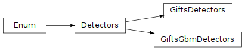

GIFTS Detector Definitions (gdt.missions.gifts.detectors)¶
The GiftsDetectors class contains the naming and orientation definitions of the
six GIFTS detectors, using the approach in the corresponding Fermi GbmDetectors class.
The GIFTS detectors use a 'G0', 'G1',...,'G5' naming convention.
Detector definitions can be retrieved with a standard “dot” notation:
>>> from gdt.missions.gifts.detectors import GiftsDetectors
>>> GiftsDetectors.G0
<GiftsDetectors: G0>
We can retrive the full name of the detector, as used in the FITS headers of the GIFTS data files:
>>> GiftsDetectors.G0.full_name
'G0'
There is also a standard detector indexing scheme that is used for all GIFTS detectors:
>>> GiftsDetectors.G5.number
5
Since the GiftsDetectors class inherits from the Detectors base class, we
can also retrieve the pointing information of a GIFTS detector:
>>> # detector azimuth, zenith
>>> GiftsDetectors.from_str('G0').pointing()
(<Quantity 247.824 deg>, <Quantity 43.958 deg>)
>>> # detector elevation
>>> GiftsDetectors.from_full_name('G0').elevation
<Quantity 46.042 deg>
We can also iterate over all GIFTS detectors:
>>> # the list of detector names
>>> print([det.name for det in GiftsDetectors])
['G0', 'G1', 'G2', 'G3', 'G4', 'G5']
Reference/API¶
gdt.missions.gifts.detectors Module¶
Classes¶
|
The GIFTS Detector name and orientation definitions. |
|
The GIFTS and GBM Detector name and orientation definitions. |
Class Inheritance Diagram¶
